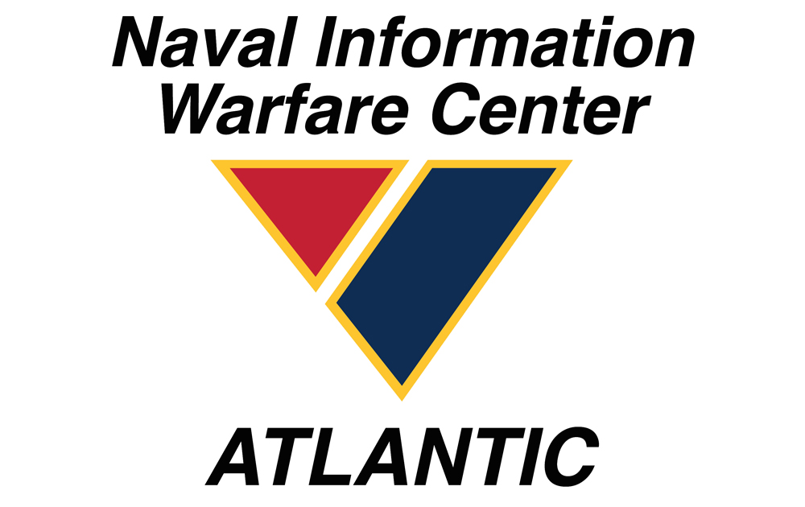

a subtitle for image here
a subtitle for image here
Intro
This blog post is about my college experience and the hardships I overcame.
Overview
- Concerns
- Internship
- Studies
Concerns
I came into computer science freshman year with no programming experience. I lacked confidence and was anxious for what was to come. Had I chose the correct major? I has to improve my time management in order to manage work and college.
Internship
Late into my sophmore year just after finishing the Java sequence, I managed to obtain an internship with NIWC (Naval information Warfare Center). I wound myself in a new environment I was not accustomed to. I was the youngest employee on my team by far.
Studies
My main concern with my studies was maintaining a high GPA and being able to manage work and college. The only semester I stuggled to manage work and school was the semester where I took Database, Operating systems, and Calculas II all in one semester (including some other classes). Database is renouned to be on of the most challenging and time consuming courses. This was particularily hard during finals week. The only way for me to manage my final exams and Database project while working was to pull all nighters. While I encountered a few rather dreadful semesters, I would say it is worth it because I am taking rather easy courses in comparison my last 2 semesters.

Conclusion
Overall my college experience has been rather rewarding and I am excited to graduate and continue to work for NIWC (Naval Information Warfare Center). Rather than concerned, I am now excited for what the future has in store for me.